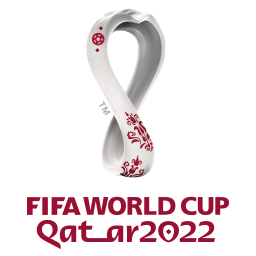
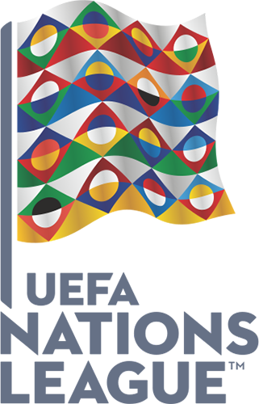

Редакция спорта
Что же дальше

Италию в октябре ждет финальный турнир Лиги наций УЕФА на родине. В полуфинале итальянцы сыграют против Испании, как в полуфинале ЕВРО-2020. Победитель в финале сразится с лучшей командой пары Бельгия-Франция. До этого и Италия, и Англия проведут три отборочных матча ЧМ-2022 в сентябре.
За Евро следует Лига наций УЭФА, а затем Чемпионат Мира 2022, который пройдет в Катаре. Ждем новых побед от легендарной сборной Италии!
 Автор статьи: Черкасов Петр
Мои контакты: